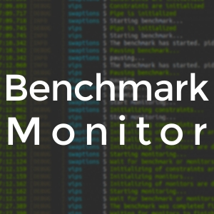

Projects

benchmon
- Technical Sheet
- Python, asyncio, RabbitMQ, Linux AIO, cgroup, resctrl (Intel CMT), Linux perf
- Role
- Sole Owner, Main Developer
A framework for creating programs that can monitor real-time metrics such as LLC hit or LLC usage with very little overhead.
View Projecthybridiso
- Technical Sheet
- Python, RabbitMQ, cgroup, resctrl (Intel CAT), Contention Estimation
- Role
- Main Developer, Architect
A scheduler that ensures optimal performance and high resource utilization in the data center by recognizing the contention of workloads as they share resources and selectively applying performance isolation techniques to the characteristics of the workload.
View Project비트쿠폰 (BitCoupon)
- Technical Sheet
- Typescript, Javascript, PostgreSQL, Node.js, Sequelize (ORM), Firebase
- Role
- Sole Server Developer
A mobile app service that enhances security by storing all payments using points, coupons, or stamps at a merchant in a block chain.
Service HomepageOnline Judge
- Technical Sheet
- Typescript, Javascript, Pug, Less, MariaDB, Node.js, Sequelize (ORM), Bootstrap, Docker, RestAPI
- Role
- Sole Developer, Sole Service Operator
A web service that judges C ++, Java, and Make code submitted by students in real time.
View Project